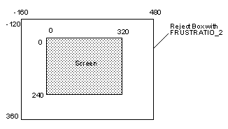

|
|
F3DEX Microcode
F3DEX Microcode Series Functions
The following provides information on functions added or changed in F3DEX(.NoN), F3DLX(.NoN), F3DLX.Rej, F3DLP.Rej, and L3DEX.
gSPVertex (Gfx *pkt, Vtx *v, u32 n, u32 v0)
gsSPVertex (Vtx *v, u32 n, u32 v0)
Changing the vertex cache size changed the range of values for n and v0. However, the maximum number of vertices that can be loaded at one time is 32. To load more vertices, loading must be performed two or more times.
Table 1 Vertex Cache Size for Each Microcode Version
| Microcode | Vertex Cache Size | Range of n | Range of v0 |
| F3DEX/F3DEX.NoN | 32 | 1 ~ 32 | 0 ~ 31 |
| F3DLX/F3DLX.NoN | 32 | 1 ~ 32 | 0 ~ 31 |
| F3DLX.Rej | 64 | 1 ~ 32(*) | 0 ~ 63 |
| F3DLP.Rej | 80 | 1 ~ 32(*) | 0 ~ 79 |
| L3DEX | 32 | 1 ~ 32 | 0 ~ 31 |
(*) If loading 33 or more vertices is desired, use gSPVertex multiple times.
gSP2Traingles
gSP2Triangles (pkt, v00, v01, v02, flag0, v10, v11, v12, flag1) gsSP2Triangles (v00, v01, v02, flag0, v10, v11, v12, flag1)
The gsP2Triangles functions perform processing equivalent to the following:
gSP1Triangle (pkt++, v00, v01, v02, flag0); gSP1Triangle (pkt++, v10, v11, v12, flag1);
That is, they render two triangles. By processing two g*SP1Triangle commands with one DL command, the DL size in memory can be reduced.
An improvement in performance can be achieved with F3DLP.Rej and F3DLX.Rej if the gSP2Triangles functions are used. Use of these microcode versions provides an advantage where speed is concerned.
gSP1Quadrangl
gSP1Quadrangle (pkt, v0, v1, v2, v3, flag) gsSP1Quadrangle (v0, v1, v2, v3, flag)
These functions render rectangles {v0, v1, v2, v3}. “flag” is used for flat-shading. The specified rectangle is actually partitioned into 2 triangles. The direction of the partitioning is fixed. The possibility of having the SP dynamically compute the partitioning direction was examined, but this was not implemented because the obtained increase in DP rendering performance relative to the SP overhead was not as great as expected.
Beginning with Release 0.96, g*SP1Quadrangle is emulated by g*SP2Triangles.
G_CLIPPING
G_CLIPPING has been added as a mode. This flag is valid only in F3DLX and F3DLX.NoN. It is ignored by other microcode versions.
If this flag is cleared, clipping is not performed. This is expected to increase speed.
Specifically, in the gSPVertex function after clearing G_CLIPPING, data necessary for clipping is not calculated.
Moreover, with commands such as gSP*Triangle and gSP1Quadrangle, clipping is not performed.
Therefore, please note that with the DLs listed below, the data necessary for clipping cannot be acquired, so the operation of gsSP1Triangle cannot be guaranteed.
gsSPClearGeometryMode (G_CLIPPING), // clipping off gsSPVertex(v, 3, 0), // load 3 vertices gsSPSetGeometryMode(G_CLIPPING), // clipping on gsSP1Triangle(0,1,2,0), // TRI rendering
Similarly, please note that when clipping is OFF, normal operation will not occur even if the loaded vertices are specified by gSPCullDisplayList.
The default condition is G_CLIPPING ON.
gSPCullDisplayList
gSPCullDisplaylist (Gfx *gdl, unsigned int v0, unsigned int vn) gsSPCullDisplaylist(unsigned int v0, unsigned int vn)
Due to the increase in size of the vertex cache, the ranges of v0 and vn have been changed. They are the same size as v0 in gSPVertex. A requirement, however, is v0 <= vn.
Although these functions operate the same in F3DEX(.NoN), F3DLX(.NoN), and L3DEX as in Fast3D, caution is required because they behave differently in F3DLX.Rej and F3DLP.Rej than in Fast3D.
gSPClipRatio
gSPClipRatio (Gfx *gdl, r) gsSPClipRatio(r)
The operation of gSPClipRatio( ) in F3DEX(.NoN) and F3DLX(.NoN) is the same as in Fast3D. However, it is different from Fast3D in F3DL*.Rej, where it is used to modify the size of the reject box. The initial value of gSPClipRatio( ) in F3DL*.Rej is FRUSTRATIO_2.
gSPModifyVertex
gSPModifyVertex (Gfx *gdl, unsigned int vtx, unsigned int where, unsigned int val) gsSPModifyVertex(unsigned int vtx, unsigned int where, unsigned int val)
Due to the increase in size of the vertex cache, the range of vtx has been changed. It is the same size as v0 in gSPVertex.
gSPBranchLessZ
gSPBranchLessZ (Gfx *gdl, Gfx *branchdl, unsigned int vtx,
float zval, float near, float far, int flag)
gsSPBranchLessZ(Gfx *branchdl, unsigned int vtx,
float zval, float near, float far, int flag)
If the depth of the vertex specified by vtx is less than or equal to zval, BranchDisplayList is executed for the DL indicated by branchdl. If it is greater than zval, nothing is done. This allows easy model LOD processing. The following is a model with three LODs.
Gfx model_near[] = { //model for distance of 32 - 200
....
gsSPEndDisplayList(),
};
Gfx model_mid[] = { // model for distance of 201 - 800
.....
gsSPEndDisplayList(),
};
Gfx model_far[] = { // model for distance of 801 - 1600
.....
gsSPEndDisplayList(),
};
Gfx model[] = {
gsSPVertex(testvtx, 1, 0),
gsSPBranchLessZ(model_near, 0, 200, 32, 2000, G_BZ_PERSP),
gsSPBranchLessZ(model_mid, 0, 800, 32, 2000, G_BZ_PERSP),
gsSPBranchLessZ(model_far, 0, 1600, 32, 2000, G_BZ_PERSP),
gsSPEndDisplayList(), // no rendering for distance of 1601
or greater
};
These commands require the perspective parameters indicated below.
Table 2 g[s]SPBranchLessZ Parameters
| Parameter | Value |
| near | Near plane location (value specified by guPerspective/guOrtho) |
| far | Far plane location(value specified by guPerspective/guOrtho) |
| flag | G_BZ_PERSP specified for perspective projections;
G_BZ_ORTHO specified for orthogonal projections |
These commands assume that the values of the viewport Z-direction parameters vp.vscale[2] and vp.vtrans[2] are both G_MAXZ/2. In this case, the depth value is greater than or equal to 0 and less than or equal to G_MAXZ. In general, it is not necessary to change the range of the depth value in the application. However, if this value must be changed, please use g*SPBranchLessZrg instead.
This GBI is supported beginning with F3DEX xxRelease 1.02xx and can be used in the same manner with F3DEX/LX/LX.Rej/LP.Rej/ and L3DEX.
gSPBranchLessZrg
gSPBranchLessZrg (Gfx *gdl, Gfx *branchdl, unsigned int vtx, float zval, float near, float far, int flag, int zmin, int zmax) gsSPBranchLessZrg(Gfx *branchdl, unsigned int vtx, float zval, float near, float far, int flag, int zmin, int zmax)
In most applications, a depth greater than or equal to 0 and less than or equal to G_MAXZ is used. However, if circumstances make changing this range desirable, use g[s]SPBranchLessZrg instead of g[s]SPBranchLessZ. With g[s]SPBranchLessZrg, the parameters shown below must be provided in addition to the g[s]SPBranchLessZ parameters near, far, and flag.
Table 3 g[s]SPBranchLessZrg Parameters
| Parameter | Value |
| zmin | minimum depth (= vp.vtrans[2] - vp.vscale[2]) |
| zmax | maximum depth (= vp.vtrans[2] + vp.vscale[2]) |
The remaining parameters are the same. This GBI is supported and can be used in the same manner in F3DEX/LX/LX.Rej/LP.Rej, and F3DEX.
gSPLoadUcode
gSPLoadUcode(Gfx *gdl, u64 *uc_start, u64 *uc_dstart) gsSPLoadUcode(u64 *uc_start, u64 *uc_dstart)
Table 4 gSPLoadUcode Parameters
| Parameter | Value |
| uc_start | Start of the microcode text section (physical address) |
| uc_dstart | Start of the microcode data section (physical address) |
Rejection Processing
The rejection processing described below allows only rendering of triangles whose 3 vertices fall within a fixed range. If even 1 vertex falls outside this range, no part of the triangle is rendered.
This range is called the “reject box.” Although the size of the reject box varies depending on the conditions, in the X and Y directions it is roughly twice the size of a 320 x 240 image (if the screen size is 320 x 240) in the initial state, as illustrated in the figure below.
The range can be changed using g*SPClipRatio. Values from FRUSTRATIO_2 to FRUSTRATIO_6 can be specified.
In the Z direction (the depth direction of the screen), rejection is performed according to the Far plane. No rejection is performed according to the Near plane.
|  |
In this case, the triangle must be partitioned into smaller triangles, and steps must be taken to prevent the occurrence of unnatural “polygon fragmentation.”
Reject processing with F3DLX.Rej and F3DLP.Rej can allow faster processing of “2 Triangles” commands. When making DL, it is advantageous to use g*SP2Triangles, if possible.
The gspF3DLX.fifo.o version provides texture perspective correction, while gspF3DLP.Rej.o version does not. F3DLP.Rej is slightly faster than F3DLX.Rej. This lightens SP processing, but because there are no changes in DP itself, DP often is not fast enough in parallel with SP. In such cases, consideration must be given to setting the render mode to a mode such as RA mode (G_RM_RA_ZB_OPA_SURF).
This microcode does not support G_CULL_BOTH.
GBI Compatibility
The GBI (Graphics Binary Interface) for the microcode in this package and the GBI for the previous Fast3D microcode are not compatible at the binary level. However, the package has been created so that these differences are eliminated by gbi.h. Using a compile option, the appropriate GBI can be assigned for each case even with the same DL.
Specifically, the GBI for the microcode in this package is outputted by defining the keyword "F3DEX_GBI" before including gbi.h (usually gbi.h is included if ultra64.h is included).
For example, if the DL is described in the file static_ex.c, add #define F3DEX_GBI to the file before the include for ultra64.h, as shown below.
static_ex.c: | |#define F3DEX_GBI |#include <ultra64.h> |
The microcode for F3DEX, F3DLX, F3DLX.Rej, and F3DLP.Rej are compatible at the GBI binary level. Consequently, the same DL can be used with each microcode. However, due to the reject processing described in the previous section, the operation of these versions varies slightly even with the same command. Consequently, the same image may not necessarily be rendered even with the same DL, so care is necessary in this regard.
Latest Version README for F3DEX Microcode
README / Release 1.23 06/09/97
This archive includes the following microcodes:
gspF3DEX.fifo.o and gspF3DEX.NoN.fifo.o are based on the Fast3D microcode. These codes support 32 vertices cache, 2 triangles' instruction, and additional DL links (10->18).
gspF3DEX.fifo.o includes near clipping, however, gspF3DEX.NoN.fifo.o does not.
gspF3DLX.fifo.o and gspF3DLX.NoN.fifo.o do not have the y screen subpixel calculation which enables better performance. As such, some wrinkling may appear in the texture.
F3DLX supports all of F3DEX's GBI. In addtion, with F3DLX you can control the clipping enable/disable functions. Disabling clipping allows for greater performance.
gspF3DLX.fifo.o includes near clipping, while gspF3DLX.NoN.fifo.o does not.
The following microcodes are supported in release 0.94 and later.
gspF3DLX.Rej.fifo.o and gspF3DLP.Rej.fifo.o do not support clipping. However, they do support triangle rejecting.
Please see "Rejection Processing" below, for additional information.
The following microcode is supported in release 0.96 and later.
gspL3DEX.fifo.o is based on the Line3D microcode. gspL3DEX.fifo.o supports 32 vertices cache. It may be used to draw wireframe objects specified by 1Triangle, 2Triangles and 1Quadrangle.
Header Files
Copy one of these to /usr/include/PR.
Loading F3DEX Series Microcode
You can use gSPLoadUcode or gSPlLoadUcode to load any of the seven microcodes included in this package.
gSPLoadUcode (Gfx *gdl, u64 *uc_start, u64 *uc_dstart) gSPLoadUcode (u64 *uc_start, u64 *uc_dstart)
Because microcode loading increases overhead, discretion in loading is recommended to obtain good performance. For practical purposes, this means intermittently switching between the microcode types used for rendering. As an example, a clip-capable microcode such as F3DLX would be used for rendering landscapes and fast microcode such as F3DLX.Rej used for rendering characters. As with previous releases, switching between F3DEX and L3DEX when rendering lines can be done without CPU involvement.
Note: When microcode is loaded with this GBI, the internal state of the RSP is initialized (segment address, viewport, geometry mode, matrix, link information of display). Thus, RSP-related settings must be reset immediately after microcode loading. Furthermore, the DL linking information is initialized. Caution is therefore recommended when using these commands in a DL called using g[s]SPDisplayList>, because control will not return to the calling DL. This is unavoidable due to the implementation of the specification.
To enable use of the g*SPLoadUcode function of these commands, t.flag, which is a member of the OSTask structure, must be set to OS_TASK_LOADABLE as shown below.
OSTask *tp; tp->t.flag = OS_TASK_LOADABLE | OS_TASK_DP_WAIT;
To make this flag valid, a patch must be applied to the OS. Please see the “OS Patches” section of the README file for information on applying the patch. Applying the patch makes the OS upward/host compatible. This patch is already contained in OS's using the N64 Software Library 2.0H or later.
These functions allow easy handling of g*SPLoadUcode.
Commands (a) and (b) below are equivalent.
(a) gsSPLoadUcode(OS_K0_TO_PHYSICAL(&gspF3DEX_fifoTextStart),
OS_K0_TO_PHYSICAL(&gspF3DEX_fifoDataStart))
(b) gsSPLoadUcodeL(gspF3DEX_fifo)
OS Patch Installation
The directory os_patches/, contains patches for libultra which support g*SPLoadUcode GBI. If you use g*SPLoadUcode GBI, then you should install libultra*.a.
To use libultra*.a, type the following:
% cd os_patches
% make
After `make', libultra.a, libultra_rom.a and, libultra_d.a can be found in the os_patches/ directory. To use them , move them to /usr/lib.
|
Copyright © 1999 Nintendo of America Inc. All Rights Reserved Nintendo and N64 are registered trademarks of Nintendo Last Updated January, 1999 |